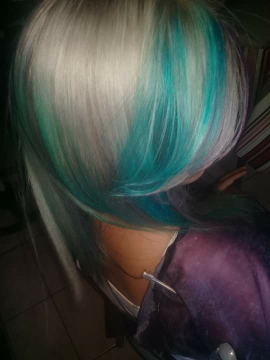
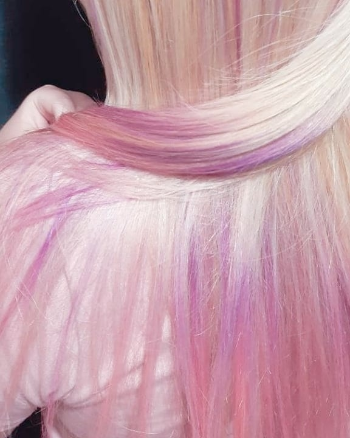
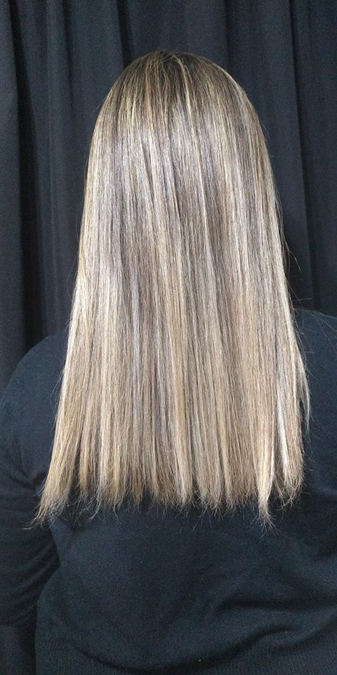

La colorimetría es una ciencia que estudia y desarrolla el color para obtener una escala de valores numéricos. Los coloristas lo aplican a su trabajo a través del círculo cromático. ... Es aquí donde aparece también el reflejo, que es el que le da el matiz al color y va a definir el mismo.
 Los tonos oscuros, por su parte, son ideales para lucir un rostro más delgado, pero endurecen los rasgos, mientras que los tonos claros no solo aportan volumen sino que además iluminan el rostro y suavizan los rasgos. De igual forma, los tonos castaños resultan ideales, pues favorecen casi todo tipo de rasgos y color de piel gracias a su versatilidad.
La decoloración del cabello es uno de los tratamientos estéticos más habituales. Muchas personas desean aclarar el color de su pelo, para lo cual apelan a distintos productos. Es importante tener en cuenta que ciertas sustancias que sirven para la decoloración son, en realidad, nocivas para el cabello y hasta para el organismo. Por eso es importante recurrir a aquellos productos que son recomendados por los estilistas profesionales.

El balayage es una técnica de coloración francesa que toma su nombre de el verbo "balayer" que significa barrer. La técnica crea un cabello ligeramente aclarado que luce con un aspecto natural como aclarado por el sol, con tonos más claros en las puntas.El Balayage en promedio puede durar 10-12 semanas, luego pierde intensidad y es recomendable visitar nuevamente a tu peluquero. Como el Balayage consiste en raíces oscuras y puntas claras, no hay necesidad de ir a la peluquería seguido para retoque de raíces.